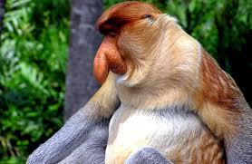
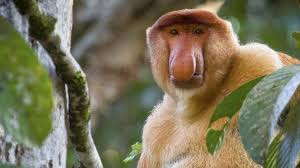
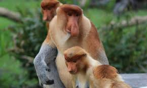
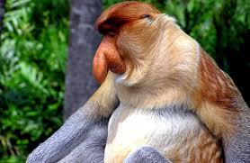
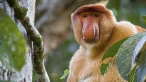
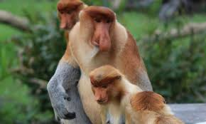

The proboscis monkey or long-nosed monkey is an arboreal Old World monkey with an unusually large nose, a reddish-brown skin color and a long tail. It is endemic to the southeast Asian island of Borneo and is found mostly in mangrove forests and on the coastal areas of the island.
 




